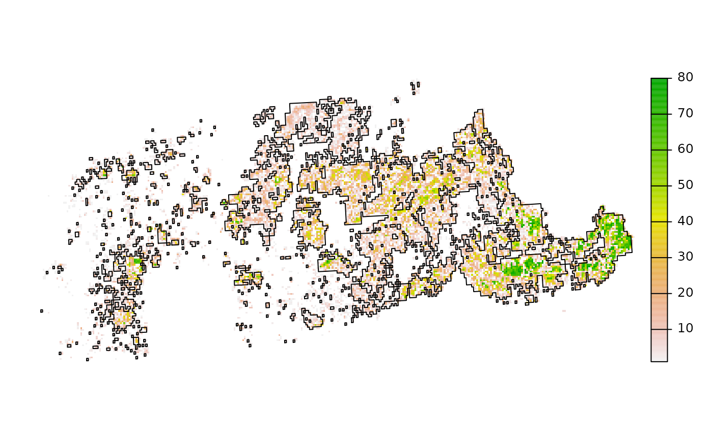

This function downloads a generalized representations of a soil series extent from SoilWeb, derived from the current SSURGO snapshot. Data can be returned as vector outlines (SpatialPolygonsDataFrame object) or gridded representation of area proportion falling within 800m cells (raster object). Gridded series extent data are only available in CONUS. Vector representations are returned with a GCS/WGS84 coordinate reference system and raster representations are returned with an Albers Equal Area / NAD83 coordinate reference system (EPSG 5070).
seriesExtent(s, type = c("vector", "raster"), timeout = 60)a soil series name, case-insensitive
series extent representation, vector results in a SpatialPolygonsDataFrame object and raster results in a raster object
time that we are willing to wait for a response, in seconds
This function requires the rgdal package.
# \donttest{
if(requireNamespace("curl") &
curl::has_internet()) {
# required packages
library(sp)
library(raster)
library(rgdal)
# specify a soil series name
s <- 'magnor'
# return as SpatialPolygonsDataFrame
x <- seriesExtent(s, type = 'vector')
# return as raster
y <- seriesExtent(s, type = 'raster')
# note that CRS are different
proj4string(x)
projection(y)
# transform vector representation to CRS of raster
x <- spTransform(x, CRS(projection(y)))
# graphical comparison
par(mar = c(1, 1 , 1, 3))
plot(y, axes = FALSE)
plot(x, add = TRUE)
}
#>
#> Attaching package: ‘raster’
#> The following objects are masked from ‘package:aqp’:
#>
#> metadata, metadata<-
#> Please note that rgdal will be retired by the end of 2023,
#> plan transition to sf/stars/terra functions using GDAL and PROJ
#> at your earliest convenience.
#>
#> rgdal: version: 1.5-28, (SVN revision 1158)
#> Geospatial Data Abstraction Library extensions to R successfully loaded
#> Loaded GDAL runtime: GDAL 3.0.4, released 2020/01/28
#> Path to GDAL shared files: /usr/share/gdal
#> GDAL binary built with GEOS: TRUE
#> Loaded PROJ runtime: Rel. 6.3.1, February 10th, 2020, [PJ_VERSION: 631]
#> Path to PROJ shared files: /usr/share/proj
#> Linking to sp version:1.4-6
#> To mute warnings of possible GDAL/OSR exportToProj4() degradation,
#> use options("rgdal_show_exportToProj4_warnings"="none") before loading sp or rgdal.
#> Warning: CRS object has comment, which is lost in output; in tests, see
#> https://cran.r-project.org/web/packages/sp/vignettes/CRS_warnings.html
#> Warning: Discarded datum Unknown based on GRS80 ellipsoid in Proj4 definition

# }